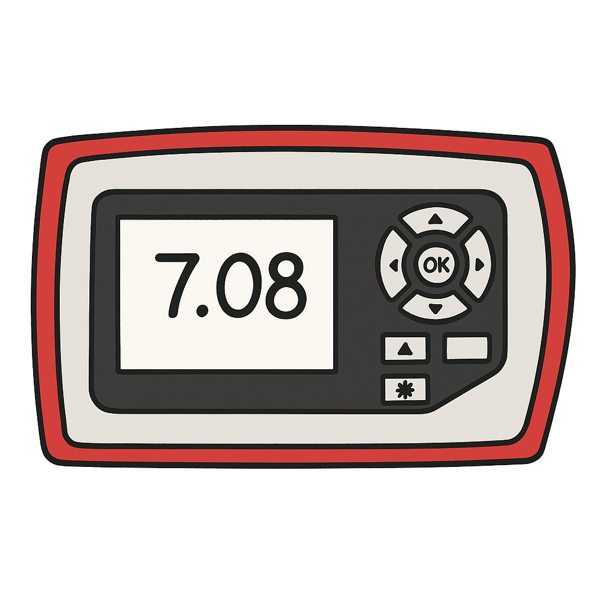
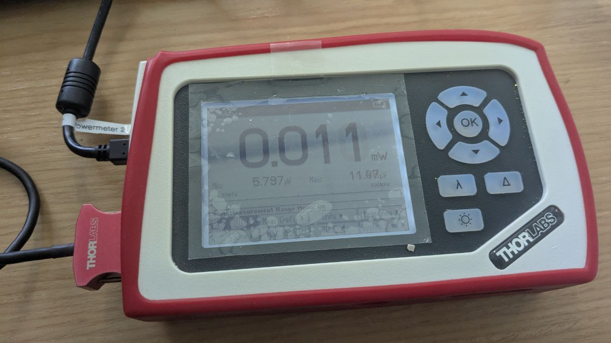
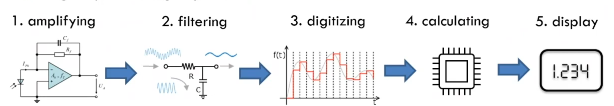
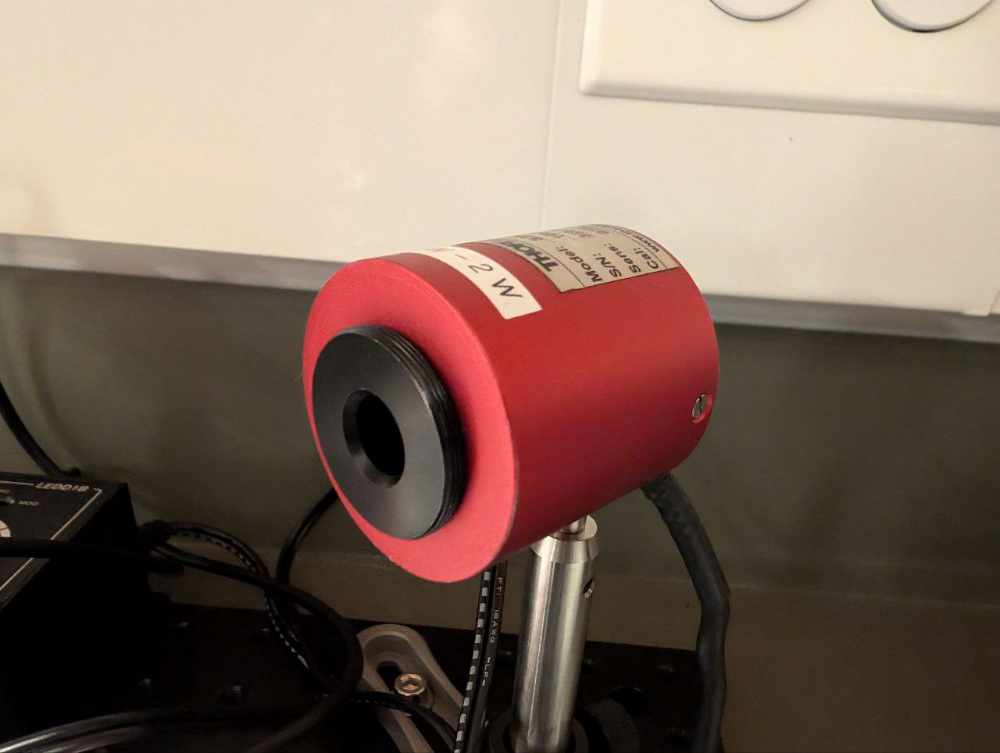
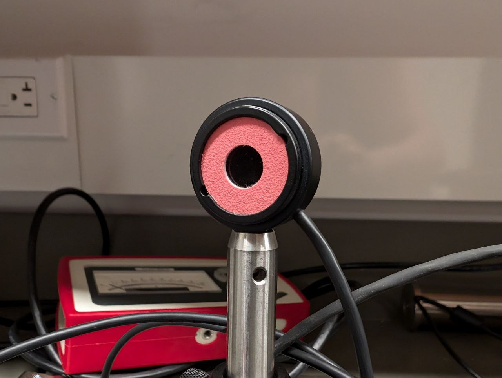
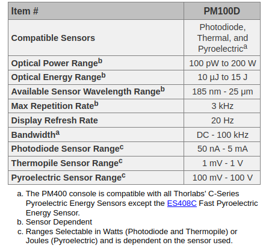
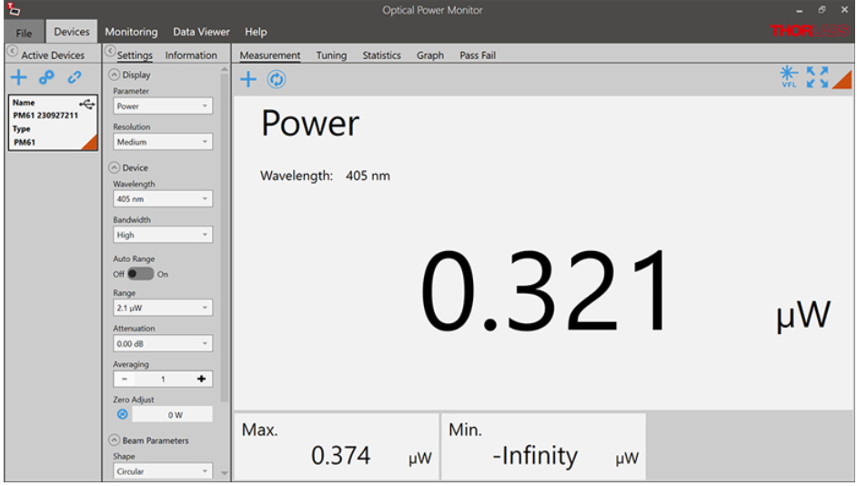

Power Meters¶

Overview¶
Optical power meters are devices that measure that power of the incident light. (Image on the left was created with chatGPT.)
There are several optical power meters you can use in your experiments: they have different designs and can be attached to different sensors. Here, we will take a look at the Thorlabs: PM100D power meter or the PM100A.
Thorlabs: PM100¶
The PM100 handheld optical power and energy meter is designed to measure the optical power of laser light or other monochromatic or near monochromatic light sources and the energy of pulsed light sources.

How does it work?¶
A sensor is attached to the power meter in order to produce an electric current from the incident light, i.e., a sensor is used to somehow convert photons into electrons. Then, this signal goes into the power meter, where it is amplyfied, filtered, digitalized, and used to calculate the power of the incident light. Depending on the process used to create the electrical current, the calculations will be different. Finally, the power is displayed in the screen of the power meter or in your computer.

There are different types of sensors you can use. Two examples are:
-
Photodiode sensors: these sensors rely on the usage of semiconductores in a PIN junction to produce electrons after absorbing photons, see photoelectric and photovoltaic effect for more information. The power of the incident light is proportional to the electric current generated and inversely dependent on the photodiode responsivity, that depends on the wavelength of the incident light. That is why it is important to provide the wavelength to the power meter.
-
Thermal sensors: these sensors rely on the usage of dissimilar metals (thermocouples) to create a temperature gradient after absorbing photons. The temperature gradient is then responsible for charge carriers to flow from the warmer to the colder side, see Thermoelectric effect and Seebeck effect for more information. The power of the incident light is proportional to the voltage generated and inversely proportional to the sensitivity of the detector, which depends on the absorption coefficient of the coating layer. Higher absorption coefficients, lead to more heat and higher generated voltages.
Different types of sensors will work better for different light sources, wavelengths and power of the incident light. For example, Photodiode sensors are designed for power measurements of monochromatic or near-monochromatic sources, as they have a wavelength dependent responsivity, while thermal sensors are suitable for power measurements of broadband sources such as LEDs and SLDs.
Here is a picture of a thermal sensor:

and one of a photodiode sensor:

Another important part of the explanation of how the power meter works is the calibration. Device calibration consists of verifying the measurement accuracy of a device and adjusting for any measurement error. For power meters, there are special setups that use references to ensure that the sensitivity or responsivity of the sensor is correctly determined, which allows to calculate the power of the incident light based on the electrical current produced by the sensor.
To complement this explanation, take a look at these videos: video1,video2.
Company software and manual¶
For the PM100D power meter, Thorlabs provides an PM100D and an optical power monitor operation manuals. Check them out when you have time. These material are very important, because they provide you with useful information, such as capabilities and constrains of the device:

The software looks like this:

How to connect with python?¶
A quick google search will show you the ThorlabsPM100 python package.
Once again, there are 3 important methods we must implement:
- Find the device.
- Connect to the device.
- Perform the task. In this case, read the power displayed in the power meter.
Find the device¶
In this example, we are going to use PyVISA for the communication between the device and our computer.
import pyvisa
from ThorlabsPM100 import ThorlabsPM100
import numpy as np
class Powermeter():
def __init__(self):
"""
A general powermeter interface.
"""
# self.rm = pyvisa.ResourceManager('@py')
self.rm = pyvisa.ResourceManager()
self.powermeters = {}
def find_powermeter(self):
"""Find all available ports with Power Meter: PM100 attached."""
for addr in self.rm.list_resources():
try:
name = self.rm.open_resource(addr).query('*IDN?')
if 'PM100' in name:
self.powermeters[name] = addr
except:
pass
return list(self.powermeters.keys())
The process is similar to the one we use to check the USB ports with Pyserial used in the Linear stage section. We get a list of possible ports with list_resources() from the pyvisa.ResourceManager() and we perform a query to look for the identifier of the device that we called name. Then we just confirm that the device in question is the PM100 power meter.
Connect to the device¶
Now we need to connect to one of the ports found.
import pyvisa
from ThorlabsPM100 import ThorlabsPM100
import numpy as np
class Powermeter():
def __init__(self):
"""
A general powermeter interface.
"""
# self.rm = pyvisa.ResourceManager('@py')
self.rm = pyvisa.ResourceManager()
self.powermeters = {}
self.inst = None
self.powermeter = None
self.parameters = {"wavelength": None,
"background": 0,
"unit": None}
self._str_wavelength = 'sense:corr:wav'
self._str_power = 'power:dc:unit '
def find_powermeter(self):
"""Find all available ports with Power Meter: PM100 attached."""
for addr in self.rm.list_resources():
try:
name = self.rm.open_resource(addr).query('*IDN?')
if 'PM100' in name:
self.powermeters[name] = addr
except:
pass
return list(self.powermeters.keys())
def connect(self, idn):
""" Connects to the power meter attached to port idn
idn example: list(self.powermeters.keys())[0]
"""
self.inst = self.rm.open_resource(self.powermeters[idn])
self.inst.read_termination = '\n'
self.inst.write_termination = '\r\n'
self.powermeter = ThorlabsPM100(inst=self.inst)
self.powermeter.configure.scalar.power()
self.get_wavelength()
self.get_unit()
print('Connected to powermeter: {}'.format(idn))
def get_wavelength(self):
""" Retrieve the wavelength selected in the power meter """
wl = self.inst.query(self._str_wavelength+'?')
self.parameters["wavelength"] = wl
print('Wavelength: {} {}'.format(wl, "nm"))
return wl
def get_unit(self):
""" Retrieve the units selected in the power meter """
u = self.powermeter.sense.power.dc.unit
self.parameters["unit"] = u
return u
Here, open_resource returns an instrument (class in Pyvisa) for the resource name provided. Then we provide information for read and write of the device, and finally we connect to the power meter using the ThorlabsPM100 class. The next line (self.powermeter.configure.scalar.power()) is to configure the device to measure power. And then, we confirm the wavelength and the units that the power meter is currently using.
We also added methods to get the wavelength and the units that the power meter is currently using. Note: The wavelength is used in the conversion from optical power to photocurrent for a photodiode sensor. Remember that the photodiode responsivity depends on the wavelength.
Perform the task¶
For the power meter, the task is to read or measure a value:
import pyvisa
from ThorlabsPM100 import ThorlabsPM100
import numpy as np
class Powermeter():
def __init__(self):
"""
A general powermeter interface.
"""
# self.rm = pyvisa.ResourceManager('@py')
self.rm = pyvisa.ResourceManager()
self.powermeters = {}
self.inst = None
self.powermeter = None
self.parameters = {"wavelength": None,
"background": 0,
"unit": None}
self.lastAcq = None
self.trace = np.zeros(100)
self._str_wavelength = 'sense:corr:wav'
self._str_power = 'power:dc:unit '
def find_powermeter(self):
"""Find all available ports with Power Meter: PM100 attached."""
for addr in self.rm.list_resources():
try:
name = self.rm.open_resource(addr).query('*IDN?')
if 'PM100' in name:
self.powermeters[name] = addr
except:
pass
return list(self.powermeters.keys())
def connect(self, idn):
""" Connects to the power meter attached to port idn """
# idn example: list(self.powermeters.keys())[0]
self.inst = self.rm.open_resource(self.powermeters[idn])
self.inst.read_termination = '\n'
self.inst.write_termination = '\r\n'
self.powermeter = ThorlabsPM100(inst=self.inst)
self.powermeter.configure.scalar.power()
self.get_wavelength()
self.get_unit()
print('Connected to powermeter: {}'.format(idn))
def get_wavelength(self):
""" Retrieve the wavelength selected in the power meter """
wl = self.inst.query(self._str_wavelength+'?')
self.parameters["wavelength"] = wl
print('Wavelength: {} {}'.format(wl, "nm"))
return wl
def get_unit(self):
""" Retrieve the units selected in the power meter """
u = self.powermeter.sense.power.dc.unit
self.parameters["unit"] = u
return u
def read(self, printval=False):
""" reads the power displayed in the power meter """
val = self.powermeter.read
self.lastAcq = val
self.trace = np.append(self.trace[1:], val)
if printval:
print('Measure: {} {}'.format(val, self.parameters["unit"]))
return val
Here, we are using the read method from the ThorlabsPM100 class and returning the value measured val. We are also saving it in a list and as the last acquired value, you will use these variables tomorrow.
Additional methods:¶
It might be convenient to define methods to change or set units and to set wavelengths:
""" This methods should be included in the PowerMeter class"""
def set_wavelength(self, wl):
""" Sets wl as the wavelength in the Power Meter"""
self.inst.write(self._str_wavelength+' '+str(int(wl)))
return self.get_wavelength()
def set_unit(self, unit):
""" Sets units to W or dBm"""
if unit not in ['W', 'dBm']:
print("Unit must be W or dBm")
else:
self.inst.write(self._str_power+unit)
return self.get_unit()
def switch_unit(self):
""" Switches between the units"""
if self.parameters["unit"] == 'W':
self.inst.write(self._str_power+'dBm')
else:
self.inst.write(self._str_power+'W')
return self.get_unit()
Exercise¶
Create a get_background method that will read the background and add it to the class parameters. Then change the read method in order to be able to make normal measurements and measurements where you subtract the background.
Here is the solution:
""" This methods should be included in the PowerMeter class"""
def read(self, pure=False, printval=False):
if pure:
val = self.powermeter.read
else:
val = self.powermeter.read - self.parameters["background"]
self.lastAcq = val
self.trace = np.append(self.trace[1:], val)
if printval:
print('Measure: {} {}'.format(val, self.parameters["unit"]))
return val
def get_background(self):
self.parameters["background"] = self.read(pure=True)
self.read()
print('Background: {} {}'.format(self.parameters["background"], self.parameters["unit"]))